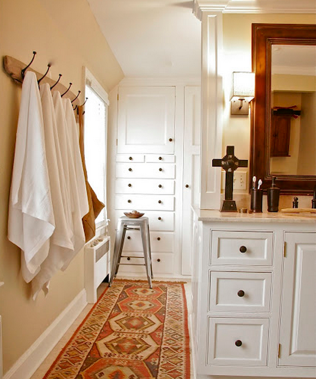

.png)
.PNG)
.PNG)
.PNG)
.PNG)
.PNG)
.JPG)
.JPG)
.PNG)
.PNG)


If I could design a dream guy for me it would most definitely be Stephen Saint Onge. (Sorry honey, if you are reading this.:) ) I first became aware of his talent when he was the in house designer for Better Homes and Gardens magazine several years ago – writing a monthly feature column.

I know you have seen his work. It has been everywhere…and I do mean everywhere. It has been featured in House Beautiful, Elle Decor, In Style, and This Old House, among many others. He was on the original board of the start up of Cottage Living magazine. He is currently a contributing editor for Family Circle magazine.
designerdadstudio.com
He has partnered with sooooo many corporations…Home Depot, Ikea, Whirlpool, Kitchen Aid, Pottery Barn, and the list goes on. He has been on The Today Show, The Early Show, The View, and Oprah. And he has even interviewed Diane Keaton. Amazing, right?
 designerdadstudio.com
designerdadstudio.com
But that is not what impresses me. Oh yes, he can make a beautiful room, but that is not what makes him my dream guy or even my dream designer. (Of course, it doesn’t hurt either. 🙂 )
 designerdadstudio.com
designerdadstudio.com
What I love most about him is his philosophy about home and life. (Does that make me nerdy?) He stresses home, family, and friends. His approach to all of his design work is make it do-able, comfortable, and budget friendly. You don’t always find that in designers today; do you?
 designerdadstudio.com
designerdadstudio.com
He is often called “Designer Dad.” (Yes, he does have a big dog, 2 sons, and a wife…darn it.) And his blog is called Designer Dad Studio. This is where he gathers beautiful images to share with his readers and explains his thought process behind the spaces that he creates.
 designerdadstudio.com
designerdadstudio.com
I love that explanation of the thought process (oh yes, true nerd girl here.) I have always felt if you can make someone understand why you are doing something, they are more likely to learn how to do it.
 designerdadstudio.com
designerdadstudio.com
His blog really does have great inspirational photos on it, and he even did a post on Downton Abbey this year! (Further proof that he should be my dream guy, right?)
 designerdadstudio.com
designerdadstudio.com
He calls the accessories that you put in your rooms “props,” and then goes on to say that our rooms are the stage in which we live out our lives. Don’t you just love that? Our homes truly are that. Many people say, “We are waiting until this or that, to make our homes into the places we want.” But meanwhile life is going by. The living is happening right now. Shouldn’t we be making the best of what we have for the time we are here? I am not talking about buying expensive furniture or all new appliances. I mean just make the best of whatever it is…that might just mean a bowl of fruit on a table or fresh flowers in a vase (or an organized closet!)
 designerdadstudio.com
designerdadstudio.com
I’ve told you I love Stephen Saint Onge’s philosophy. Here is his motto: Good home design has the power to change your life. So true. I am going to give you a little homework assignment to do before my next post (part 2.) (What do you mean homework assignment…we are on summer vacation?!) You will enjoy this one. I think his philosophy shines through in this post that I want you to read…click here. It’s a good one. I promise.
 designerdadstudio.com
designerdadstudio.com
And that brings us to our giveaway. Since Father’s Day is coming up this weekend, I thought it only fitting to honor the Designer Dad by giving away his book, No Place Like Home. This is one decorating book that I think you will turn to again and again. He mixes modern with traditional and gives many tips along the way.

No Place Like Home: Tips & techniques for real family-friendly home design
To enter, all you need to do is leave a comment on this post and/or any other posts that publish between 6/11/13 and 6/16/13. Remember, you many enter on all posts between those dates, but you may only enter once per post. All entries must be in by midnight Sunday night (Father’s Day). I will announce the winner of the book in the first post after that. (Since this is a giveaway, I won’t be putting my comments in as I normally do.)
I’ll leave you with a talk about question for today:
Which of the rooms in today’s post is your favorite?
Hope to hear from you soon!

*** Giveaway closed. Winners announced 6/19/2013.***


.PNG)
the all white theme looks good but it’s not really my thing. Maybe I’m weird but i find white kinda hot in the skin. Maybe I prefer light blue or light colors that gives a cooler impression
Im pushing the envelope trying to catch up on my blog reading and posting on all three blogs! I have really enjoyed this post and the pics!
Kelly…all I can say is that HE IS THE REAL DEAL!!!!!
You can almost smell the fresh cotton on his designs 🙂
Love the family room! I knew of his work in magazines but had never been to his site. Thanks for the introduction!
Thanks for introducing us to Stephen’s work! I became an instant fan!!
I just found your website, and spent part of the weekend ‘catching up’. Love it!
I have enjoyed following Stephen Sain-Onge’s columns in the decorating magazines–would love to win a book!
Thank you so much for the opportunity to win Stephen Saint-Onge’s book!
Favorite photo/room. The portion of the bedroom with the blue & white
I love his style of decorating. It is so homey, casual and comfortable. Would love the book to help me get my home to have that same relaxed look. Thanks for the opportunity.
I have always loved the rooms he designed in Better Homes and Garden. Would be honored to win an autographed copy of his book. Thank you for the opportunity.
i need help with family-friendly decorating. i will check this book out at the library if i don’t win
I love the white cabinets kitchen…simple, crisp, clean! Would love a signed book! Thanks for the chance to win!
I can’t wait to spend some time looking through his works. What a wonderful review!
We don’t really have art around our home as a military family moving often but if I did have something I would love a picture of country fields because that takes me back to home as a child.
Gosh, I don’t think I could pick one room. I love his layed back, real living style. Would love a chance to browse through his book.
I have followed Stephen for years… I love all his rooms!
I would love to win a copy of his book. I bought it for a friend, but I don’t have a copy for myself.
He is one of my all time favorites!
Love this man. I’d love to live in one of his rooms, heck, I’d like to live inside his head. But I suppose a book is the next best thing? Would love a signed copy.
I have been out of town, and I am just now catching up on my favorite blogs. Wow! What an honor that Stephen St. Onge found your post and commented! Just from his kind words, I can tell he’s a very nice man, as well as a wonderful and creative decorator! And he’s generous too! I really do love his style, and I like ALL the photos/rooms. But I guess my absolute favorite would have to be the kitchen. With my big family, I spend a lot of time in my kitchen, so I appreciate good design interwoven with beautiful touches. Very nice.
Great post! Hope you are having a wonderful summer.
Amy
Oh how fun Kelly! I love Stephen St Onge! I would absolutely be thrilled if I won one of these great books signed by him! I love all his rooms of course, but the foyer is my favorite. 🙂 Thanks for this opportunity!
So excited for you Kelly! Enjoyed reading your post and looking at the pictures you posted.
I agree. A home designed for the family that lives in it, helps the family grow together.
I love the entry with the bench. Everything looks so crisp. I would really like to get a copy of the book. I’m sure it would be a great “go to” decorating book.
I have been trying to make up my mind which is my favorite between the bath and kitchen but I believe the kitchen is the winner! It reminds me of your kitchen and my new remodeled kitchen. It looks so homey and real. I loved the movie that was mentioned on his blog having just seen it not too long ago so I read all about that house. You must be flying high girl having gotten a reply from a famous designer and author of a decorator book! I didn’t know his name but have seen his work in magazines. I am ready to study his designs and tips as I am now embarking on remodeling my downstairs bathroom– changing it from a tub to a walk in shower which will be so much better because of all the sand that makes it’s way inside because of living on a lake! Could NOT believe how many replies you have gotten– your blog has made it into the Big Time!!:)
All photos begged me to pour over them. I was especially drawn to the blue and white room. Please pick me!
Love this designer! The officers my favorite with all the drawers withe the label holders It is so fresh. Would love to have this book! Thanks
I really love the foyer. It is wonderful that S.S.O. used products from Lowe’s and Home Goods, which are completely accessible to the average American. I also LOVE the oars in the back corner. I have been looking for something similar for my sunroom for a while now – I am inspired to keep on searching! Sooo beautiful!!!!
I love his philosophy on the family-focused life and home. Very stylish and real life possibilities. I have long admired his work and enjoyed this post very much. The blue and white hall and entry has been a favorite of mine but the guest bedroom in this post is very lovely. Thanks for the chance at winning his book.
I love this post! Thanks for introducing us! I would love to win the book! It looks amazing!
I’ve loved Stephen Saint-Onge’s work and designs ever since I was inexplicably “drawn” to them in Cottage Living magazine. The rooms are so home-y and cozy to me. Would love to win his book!
And thank you for your wonderful site, Kelly! I “am” enjoying it.
Sincerely,
Karla
I love the decorating style and would love to have the book to drool over! Thanks!
I fell in love with the very first picture – the bedroom. His taste is so classic and warm, without being cluttered.
Love the room with the blue and white plaid curtains! I’m always a sucker for that plaid!
I love his comfortable, casual, collected style. It’s not pretentious, it’s real.
Soothing and calm are the words that come to my mind looking at these rooms. I love the bedroom, it would be a hard place to leave!
I keep rereading the post….I want to win that book. Good Luck to me. I put his blog in my favorites. Thanks Kelly!!!!
Love the room with the blue plaid drapes and the blue and white porcelain.
I have enjoyed Stephen Saint-Onge since he was on a TLC program many years ago called “While you Were Out” He was always my favorite designer, and still is. I don’t need to win his book, I already have one and devoured it on a long 5 hour flight. I enjoyed it so much, I bought one for my daughter to reference while decorating her new home. On top of being a great designer, he seems to me to be a really good person…
Wow Kelly! So exciting for you and us. I read Stephen’s comment to you and it felt so good when he said IT IS YOUR HOME. There’s a reason I like that so much. You see when we moved to this new house I thought I would go neutral just because that seems to be the in thing. So many beautiful homes and blogs are designed around white these days. I think they are beautiful but when I tried it, it just didn’t feel right. A few months into living here we decided to bring back our beloved RED. That feels right to us! And so I will tell you that I love all the pictures you posted but those red chairs in the kitchen make me smile!!
Looks like a great book to add to my collection!
My favorite picture from this post is the kitchen. It looks so inviting an welcoming. I would love to win this book because I do not have it and I also think my husband would love to read this book as well. I really like all of the picture in this post, he does amazing work.
Thanks, Patty
I am blown away by the look he’s created. It’s me!
HOLY GUACAMOLE! Stephen COMMENTED and he’s sending you EXTRA BOOK GOODNESS too!! Your blogging life: MADE!! The office space with the striped walls does it for me–I’m about to makeover our study and that photo really inspires! I would so love to win an autographed copy of his book–I’ve been a fan of his for ages. Thanks, Kelly!
Love the kitchen. It is real looking–stuff on the counters–yet beautiful.
Great post.
I, too, have been following him since his BH&G days! Loved those real rooms he redesigned! He always made it look affordable and doable. Sure would love to have that book.:)
I found your post through following Designer Dad Studio and plan to explore your pages! Stephen is the best, especially taking all Ikea stuff and turning it into a gorgeous designer space.
Hi Kelly ~ I can’t wait to jump over to his website. I can’t really pick which room I like best but I know I love a white background with pops of color. My favorite color just happens to be blue so all of the rooms in your post are wonderful. I like the idea of making your house “special” now and not waiting on the new furniture or remodel. As soon as I read his blog I am going to go cut some fresh flowers and organize a drawer or two. Thanks for the inspiration!
Love all the pics but especially the bedroom. How exciting to have Stephen comment and contribute the signed books! I would love one. Happy summer!
Amazing Kelly, you must be on cloud nine. The pictures of Stephen’s designs are beautiful. Now, while I am waiting for new posts from you, I have another wonderful designer’s blog to explore. I love Stephen’s philosophy on the home and life in general. My favorite room was the bedroom pictured in the first photograph.
Hi Kelly, I’ve checked out Stephen Saint-Onge’s website now…thanks for writing about him. And how great that he is sending more books for your giveaway! I was amazed that the house from the movie Mr. Blandings Builds His Dream House is still standing! I live in Southern California and would never have dreamed the house was built out here, and not in New England.
Thanks to you for another great and informative post!
Ann
Kelly, I remember Stephen best from watching the show “While you were out” on HGTV. I loved all the cool projects he came up with for the friend/family member to create. His re-dos always stood out for me as being down to earth and liveable even back then. As you can probably guess it’s the blue and white curtained space in your photos above that takes my breath away! I love all the white with wood/pine in the other photos as well. I also can’t help but wonder what color that beige/taupe paint color in most of the rooms really is, lol!! Thanks for the giveaway!
My favorite is the blue bedroom. I love everything he does!
How exciting and what a thoughtful comment he left for you and your readers. I’ve enjoyed Stephen’s work for quite a long time. HGTV timeframe was when I became familiar with him. I love the rustic touches he incorporates in quite a few of his rooms. That bathroom with all of it’s little drawers and cubbies in the built in would be my favorite from the images you posted today.
Def the red chair photo!!!!!
I am a huge fan of his…love the kitchen. I would give up upper cabinets for windows like those. The peninsula would be perfect for cookie with my grandchildren.
I love the rustic table paired with the red chairs. I started following Stephen’s blog some time ago. It’s a lovely blog, hope everyone checks it out.
I would have to pick the white& bright kitchen… Don’t think I could bring myself to leave that room!
I love the comfortable feel all of the rooms have! But, if I have to pick just one I’d pick the room with the blue & white curtains, pine chest & blue porcelain – so classic & lovely. But, I also adore those red chairs in the dining room!
WOW! I love all the rooms but the bathroom is my favorite, I think! Love the way the towels are hung on the board with hooks. I have a perfect spot for that in my bathroom. Thank you so much for bringing this wonderful designer in the blog.Love your blog & can’t wait to see the next post.
Thanks, you make my day.
Carol
Whoa, you’re hitting in the big leagues now, girl! How exciting that this well known designer stopped by for a visit. I bet he scrolled through a few older posts, and noted your charming style. As for a personal favorite, no single one room for me, what I did like was the recurring feeling of comfort in all the rooms, and that mix of older things done up with a modern flair. And, there was a lot of blue, which is always so fresh and inviting.
LOVE, LOVE, LOVE his work – combination of elegant and casual! Would love to read more about him and see more beautiful pictures of his work! Thanks for sharing!
Love his work! Especially how it fits in with the everyday family. Simple beauty and function…liveable…I would love the chance to own one of his books – so inspirational! And thanks, Kelly, for such a wonderfu blog! I enjoy every post!
Love all of his rooms but my favorite is probably the one with the blue and white curtains and porcelain, pine chest, mirror and oars in the corner. Would love his book ! I too am a huge fan of his!
Love the philosophy of decorating a home. Beautiful spaces.
Thank you for your wonderful blog,
Julie
I have decided that my favorite rooms, it was a tie, we’re the kitchen and the bedroom. The bedroom looked so peaceful with the colors that were used and I love looking at beautiful kitchens having just survived a remodel of ours. Thanks for the opportunity for three people to win this wonderful giveaway, Kelly. Take care, Lindy
Can I say I love 3 of them???
The blue and white Chinese pottery on the desk (just put some similar items on my dining room tablescape today), the wonderful file drawers/corner desk (I have a secret obsession for file drawers and cute file folders) and then, the RED chairs!!
Love, love, love it all – but the bathroom may be my favorite – the rug is divine!
Congrats on a great give-away!
(also a great link to another blog)
How very special to have a comment by the author!!! I have checked out his book from the library several times, and would love to have my own copy!! Like you, I really like his philosophy. His spaces are always so warm and welcoming. (Somehow posted my first comment on the wrong blog post – so sorry!)
How exciting for you to get that post! I do love his design style and am really in love with the french metal chairs and wicker combination for the dining room. Every room he does is just right.
I love the stairway with the blue-striped carpet. What an unexpected place to see beauty. I like Steven’s real-life attitude to design.
The whole time I read your blog I thought you would say you liked him because of his plaid curtains….go figure. I would love to win his book.
I had never heard of him (!) but now I have fallen in love.
Thank you Kelly and Stephen for such a wonderful give away! I loved the bedroom, the living room and the dining room. I think my favorite would have to be the beautiful living room, I could sit there and read for hours and not have a care in the world.
Thanks again,
Dawn R.
He’s a wonderful designer! I read an article in Better Homes and Garden on the way he decorated his parent’s home which I believe is one of the photos you have shown. Lovely!!!!
All the rooms are wonderful! Such a calmness to it all –
Love his design! I believe he was on an HGTV or TLC show if I am remember correctly! Fingers crossed!
Kelly,
EEK! and SQUEAL! How terribly exciting that Stephen posted! I would love an autographed copy, but I can assure you – I will go buy that book if I do not win. What a great – real – designer. Thank you for the introduction and the opportunity! Oh, I love all of the rooms, but the one I scrolled back up to study was the entry with the blue – gorgeous!
Jamie
Just discovered Stephen’s blog which led me to you! Love your blog! I love the dresser with the blue curtain….exactly the feel I want for our beach house. Look forward to following you! Thank you!
Kelly,
First post for me EVER! I have been a HUGE fan of yours for over a year and I have plagarized many of your fantastic home ideas into my home! Now to pick a favorite room of Stephen’s is nigh impossible I adore the white with all of the warm wood tones throughout his home; love Stephen’s philosophy: home, family, and friends; I couldn’t agree more!
I’d feel blessed to have one of his books. Love the pictures….love your site. I’m going to check his out too. Thank you so much.
I would love to win his book! My favorite room is the kitchen, because it doesn’t look decorated. Just pretty, comfortable and so liveable. A lot like your house!
I love the living room with the big coffee table! I’ve seen so much of his work. Awesome!
I love all the pictures you posted of his rooms and am now going to have to check out his blog!
My favorite room is the bathroom. Love the built-in’s. This is my first time commenting on your blog Kelly. I enjoy it so much and I want to thank you for taking the time to share beautiful places and spaces.
Wow!would love love to get my hands on this book and the amazing photography! His design makes me feel so serene yet not stuffy…just the kind of place that I want my family to live in 🙂
The blue and white curtains really caught my eye. I have been thinking about adding more blue to my palette. I would love to have an autographed copy of his book!!
Pick just one room as my favorite? Gee, spent 5 minutes going back and forth on this one. For some reason my eye is drawn to the hallway (?) with the bench and mirror and just a glance of the bath (?). I want to know what is behind the door! On my way to go read his blog! Thanks for the giveaway!
You open my eyes to new people, places, ideas and inviting homes. Thank you!
PJ Bronson
Oh, YES! I remember oogling and ogling his work back in the Cottage Living days! What a great give-a-way! Crossing my digits!
Have been following Designer Dad for some time. Love his work & would love a copy of his book! His blog led me to yours.
Have loved Stephen for a LONG time. Remember him from tv years back also. I love the office picture. Would love to have him come take a shot at my craft room. Imagine being able to work in a beautiful and organized space….sounds dreamy!
I would love, love to receive a copy of his book. I have just discovered your blog and his blog in the last couple of weeks and love them both. Casual and friendly styles!!
Kelly,
I loved that movie and it was fun to read about what the house ended up being used for…a little sad that the paint on the house wasn’t the same as in the movie. I like the image with the blue and white accessories the best, but the book cover is fabulous as well. What a great philosophy Designer Dad has about homes. I’ve subscribed to his posts. Thanks for this, while I probably had seen his work, the name was new to me.
xo,
Karen
Kelly;
I found your blog from reading his blog! I love Stephen Saint-Onge’s design work, his creativity and simplicity. I would love his book. I would love to design like he does!
How awesome for him to honor you and your readers. From what I have seen so far of your blog, I am a new fan!
Take care,
Monica
I love the bathroom with all the built-in drawers and cupboards. It’s such a shame that not many modern homes have built-ins and now days. My favorite movie house is from Steve Martin’s version of Father of the Bride. Sometimes I want to watch that movie just so I can look at the house again. Have a great day Kelly!
I found this through Stephen’s blog. I would love one of his books! Thanks. P.S. I’m happy I “found” you. 🙂
What a inspirational post! I really like the simplicity of the hallway with the bench and large mirror. Thank you for sharing the photos and his philosophy!
I love the design of the bedroom…has such a welcoming, extremely comfortable, and elegant “feel”. Thanks for this opportunity to win a book from Stephen…love his approach and work. Very inspiring! Blessings to you and yours!
Hard to pick a favorite, but I think the bedroom is very inviting.
The last photo in the post right before Stephen Saint-Onge’s book cover is my favorite! I love the red chairs around that table and the littel burlap sacks (or napkins)in the chairs have insipred me to make some of my own and fill them with shelled peanuts for our Father’s Day get together this weekend! I love the color and texture in the welcoming table scape. Thanks for sharing Kelly and Stephen! I am now a follower of the Designer Dad as well.
oh this looks good i would love to win one
What a great summary of a great designer! I have seen his work for years, and it seems I can always see his stamp on it. I love what he does. (Those stairs with the blue-striped runner….dreamy!) He has been on my blog reader list for quite a while now. I don’t have his book and would love a copy! Thanks for the chance!
I love all these photos, but the first one of the bedroom is my favorite. I haven’t allowed myself the luxury of buying a décor book in a long time. I would love to have a copy of this book.
I just love his style and the mix of some rustic and fresh decorating. Sometimes the décor on the blogs I read have just too much all white and gray for me. I love that this designer mixes some wood tones and a few pops of color along with the clean whites. Many thanks for the chance to win!!!
The dining area with the red chairs. It just looks happy to me. A place to really enjoy a meal with friends.
Love Designer Dad! Thanks for the opportunity to win his book!
Tks so much for introducing me to this designer. He has great ideas and style and I love that his look is so pretty but still uncluttered. It is perfect to me. I love the living room the best if I have to choose one.
Love the blue and white, and like you admired Stephen in BHG years ago. Would really like to win his book!
WOWOWOWOWOW… I went straight to his blog and I am hooked… (actually I was hooked at the first picture posted about one of my alllll time favorite movies with Myrna Loy!!) 🙂 WOULD LOVE TO HAVE THE BOOK!!! Thank you so much for sharing and the opportunity!!! Terri ( my favorite room is the kitchen with those amazing wide plank wood floors!!!
I love Stephen Saint-Onge! He is one of my favorite designers. I love that kitchen he did that you posted. I have it pinned for ideas for my own kitchen!
Holy Cow!
How cool is that! Stephen read your post AND commented here AND donated some autographed books AND mentioned you on his blog this morning! Yay!
I have been in love with Stephen for a million years now…I think I first discovered him in BHG, too.
Love, Love, Love Stephen Saint Orge !! I too became aware of him as a designer from Better Homes and Garden. His designs are truly livable and how I aspire to furnish and decorate my house.
I have always been a big fan of Stephens. I have a magazine from the late 90’s that show a remodel he did on a split level (you don’t see many of those!). He put wainscoting/beadboard in the bathroom…and I fell in love. Thanks for another great post Kelly!
Kelly,
I, too, love Stephen’s style…I would love to own his book. Thank you for the generous chance to own one!
Happy Weekend!
Oh,Kelly, thanks for introducing us to the wonderful work of Stephen! I became an instant fan and admirer of his work. What a talent …
Is that a Dutch door in the bedroom? I always wanted one but have never been lucky enough to find a house where we could incorporate one – so, I’m still dreaming of maybe one day ….
Also adore the staircase with the blue striped runner. There isn’t an area in the house that I would change.
I hope you are enjoying your well deserved time off from school.
Greetings from SC,
Monika
Kelly,
I so enjoyed your post. I have loved Stephen’s work, but did not know he had a blog…there goes my morning. This makeover is beautiful. Years ago we changed our dining room into an office and the family room into a dining sitting area. We still have a large living room that we never used before. Now all the rooms are used all the time.
I always get a happy feeling when I see a new Talk of the House post. You are such a breath of fresh air. Have a happy day Kelly.
Hugs, Donna
I have followed Stephen since Cottage Living. I love red – so the dining area with the red chairs does it for me! I think every room should have a little red in it… Great giveaway!
Hello to all…
I must say that this was a great way to start my morning finding your wonderful, very detailed posting about my creative work and my way of looking at the family-focused life and home.
Your kind words and attention to detail about what I have shared through my work over the years is sincerely appreciated.
It’s funny – when you are in the midst of doing work that you love – you sometimes need to step back and say “is what I am doing reaching people and making a difference in some little way in their own lives?” Your posting and all the wonderful responses to it are confirmation of that. Thank you all.
I would love to contribute three personally-signed books of NO PLACE LIKE HOME to this giveaway. I will let Kelly decide who those people should be and ask her to contact my studio once she has the winners. I will sign them and send back to her (*Yes, Kelly there will be one for you too!).
All I can say is that as a designer with a focus in on the family home – it’s all about keeping it real and comfortable for those that live in that home. It’s not someone else’s idea of what a home should be – IT IS YOUR HOME. It has to be welcoming to you and your family at the end of the day.
I love that I get to help people make little changes in their homes and lives that can truly uplift, motivate and inspire them in some way. Your posting and the responses reminded me that’s truly what it’s all about.
Thanks!
Be creative,
Stephen Saint-Onge
I, too, love his designs and would enjoy learning how to make my home into a restful, relaxing refuge. I would love having the book to guide me in that direction. Wasn’t he a featured designer on a show on HGTV a few years ago, or maybe on TLC? Oh my favorite room….hard to choose! I guess the living room/family room, it makes me want to sit down and put my feet up with a good book.
C
I love these pictures….my favorite is the bedroom…I’m a sucker for a dutch door and I love all the white. Beautiful and laid back. Great giveaway!
Love the family room. I am trying to work around to that look myself. So clean but such a relaxing looking room.
Would love the book! His philosophy sounds like mine.
Thanks Kelly for the wonderful post. I love the picture of the kitchen table with the red chairs, I wonder where the partial print in the background that says farm to table is from…I love it. I am always on the lookout for different art work. I am going to check his blog out right now, thank you as usual! The book looks amazing!!!! Mickey
Fantastic giveaway! Would love to win his book! Thanks for the chance!
Kara
Oh what a fun, fun give away! I love books, and I am sure I would enjoy this one. Loved the assignment too. You should do that more often! It is great to read what others think.
I guess my favorite room would be the blue and white room. I love cobalt blue and that picture captures the color perfectly.
Thank you again for the great opportunity to win a book.
Great post kelly. I love his rooms .very easy to live in . They have a casual feel to them that seems to let you just relax and enjoy. Have not seen the movie but would love to. I loved that he was able to see the house years later. I would want it to look like it did in the movie. More attractive . Have not seen his book. I will look for it. Would love to see more of his style . The room that was my favorite was the bedroom. Yarlette
I do agree with his philosophy and I love all his work! I think my favorite pic from above is the one with the blue plaid curtains and blue accessories. I love how the blue looks with the pine chest and the white mirror. Now I am off to read his blog!
Thanks! – Shelley
I am loving his style. Will check out more and would LUV the book. Thanks for give aways!
Hi Kelly,
Guess what? The photo of the desk/office is my sister’s house. If you haven’t already seen the transformation, check it out here:
http://www.bhg.com/rooms/home-office/makeovers/home-office-decor/
You are right, Stephen is amazing. I just love his taste. And, he is just as nice in “real life” as you would hope.
Looking forward to part II!
Lisa
That bathroom! The cabinets are wonderful! That book would be amazing!
My favorite room is the blue and white vases against the natural wood. I also love the curtains as well. I have never heard of Stephen but will certainly be on the look out for him. I wish more designers would take heed that we do LIVE in our homes. What is elegant and beautiful may not withstand children and grandchildren!:)
I love the kitchen. I remember seeing it a long time ago in a magazine – I think I even tore it out. I love his philosophy too. If that makes you a nerd then I must be one too! : )
WONDERFUL!!!! LOVE IT ALL!!!!
I had a hard time making a choice. They are all so appealing, but kept coming back to the bathroom with the dressing room. Thanks for a great giveaway. Love your style. Susie
that bedroom is so calm and peaceful..definitely my favorite!
Enjoyed Stephen’s blog about his favorite movie house. I hope to find this movie; love Cary Grant too. The bedroom photo is my favorite, so bright and airy.
Love these rooms, not too fussy but very stylish. Thanks for the giveaway. Jo @ Let’s Face the Music
It is a hard choice. I love all the white! Probably the bedroom. Neat story on his blog too. Thanks, Kelly. Your excitement came through in your writing today! Patty
I really like the bathroom with the built in storage…….It is very much like the house of my childhood. That same house had a built in china cabinet and buffet. Also, a pantry adjacent to the kitchen. Now days houses have huge clothes closets but no real storage for bed linens, supplies, etc.
I,too, have enjoyed articles by and inspiration from Stephen Saint Onge. It would be great to have a copy of his book.
p.s. I used your vanilla ice cream recipe. It was easy and yummy. Thanks for sharing.
Thanks for introducing me to this designer. I too love this style. My favorite would be the living room. Also, like the runner on the stairs. Thanks, Kelly. Enjoy your blog!
Love his style! Thanks for the giveaway!
I have to say I love the blue and white room The combination of colours and textures is to die for.
My favorite is the foyer. There is something positively enchanting about the combination of blue and white with honey pine. Add to that a couple of nuanced nautical elements and a blue and white striped summer bag and you have a room that can only evoke a visceral response. And for me it does. It is timeless design that transcends all trends, as beautiful in its simplicity now as ever.
Happy Father’s Day!
LOVE LOVE LOVE the blue & white bedroom….swoooooooooooon.
I love a room dressed in white,
it always looks just so right,
Lived in furniture, bumps and all
If this was my house I would have a ball.
I loved the blue pottery in the bedroom but then I also really loved the wooden coffee table in the living room area. I went to Poland a few years ago and bought some of that beautiful blue and white pottery, and I can’t get enough of that color combination! also could really see that coffee table in my house – it looks rustic but “beachy” at the same time. I can see why you like this guy so much! 😉
If I have to choose….. I think that kitchen is gorgeous.
I loved that movie Mr. Blandings builds his dream house.
I have seen it several times as as I love the old movies too.
I believe it is so true… there’s no place like home.
I would love to win the book. Thank you for the chance.
Blessings, Becky
The kitchen or living room is my favorite! I want to paint my beadboard wall in my breakfast nook white but just haven’t done it yet! It’s looks so bright and cheerful! I would love to win that book! Thanks for the opportunity!
Light and airy, yet warm and comfortable. Looks like a great book for inspiration.
I’m in love…the room with the blue and white pottery and blue plaid curtains….sigh.
I knew he was talented. That stairway is amazing! Thanks!
I love getting ready to go to bed and realizing there is a new Kelly post to read! I vote for the living room with the slipcovered chairs, wicker chest and white peonies in a vase with water and lemon in a mason jar!
I just love everything about him!! I love his book cover because it reminds me of my own farmhouse table, so it’s good inspiration for me. I can REALLY hear your teacher side coming out in this post, Kelly!! ‘I have always felt if you can make someone understand why you are doing something, they are more likely to learn how to do it.’ Isn’t that the truth!?!?!? Thanks for the chance at the give away. Looking forward to Part 2. Have a good night.
Looks like a. great book. I have seen him on tv and magazines. I like the room with the blue and white. i am decorating a guest room in wedgewood blue and white, Thankyousomuchforthe blog and a great give away! What Fun!!!
ohhhh, i love stephen’s work! he even left a comment one time on my blog about my sunroom (i need to get that room on my blog one of these days…it’s very nice!)
and what’s wrong with nerds? don’t you know they are the best?!! if you’re a nerd, i’d love to be in your nerd club!
as for my favorite pic in this post, it’s hard to say…i love the first room (bedroom) and i also love that farm table on the front of his book. actually i’d be happy to have any room designed by stephen!
I love all the rooms, but the entry hall really caught my eye. I would love to win this book!
Do I really have to choose between the bedroom and the family room? I love that white bed in the bedroom but if I have to pick, I will pick the family room.
I would love his book and love his philosophy, too. My fave is the one with the blue and white plaid curtains. I have a thing for blue this summer.